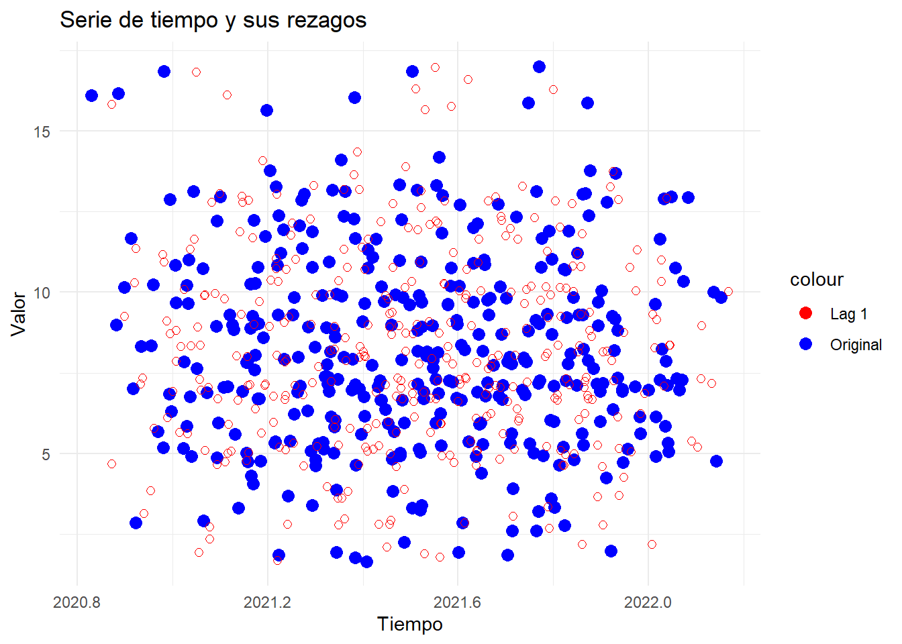

Capitulo 4 Rezagos
Los rezagos se usan para evaluar los valores de un conjunto de datos o una serie de tiempo y saber si es aleatoria o no. Si los datos son aleatorios las graficas no mostraran un comportamiento identificable y si los datos no son aleatorios, las graficas mostraran un comportamiento identificable. Los rezagos tambien ayudan a identificar outliers.
- Preparación de los datos
Este código carga datos de nacimientos y los agrupa para calcular el número total de nacidos vivos por fecha teniendo en cuenta los partos dobles o simples.
##
## Attaching package: 'dplyr'## The following objects are masked from 'package:stats':
##
## filter, lag## The following objects are masked from 'package:base':
##
## intersect, setdiff, setequal, unionDatosNacidos <- read.csv(file = "data/Nacidos_Vivos_en_Hospital_Manuel_Uribe_Angel_20240418.csv")
DatosNacidos$FECHA <- substr(DatosNacidos$FECHA,1,10)
DatosNacidos$FECHA <- as.Date(DatosNacidos$FECHA, format = "%m/%d/%Y")
agrupnacidos <- DatosNacidos %>%
group_by(FECHA, MULTIPLICIDAD.EMBARAZO) %>%
summarize(NumeroPartos = n(), .groups = 'drop')
agrupnacidos$NumeroNacidos <-
ifelse(agrupnacidos$MULTIPLICIDAD.EMBARAZO == "DOBLE",agrupnacidos$NumeroPartos*2,agrupnacidos$NumeroPartos)
agrupnacidos_2 <- agrupnacidos %>%
group_by(FECHA) %>%
summarize(NumeroNacidos=sum(NumeroNacidos), .groups = 'drop')
df <- agrupnacidos_2Este código crea un histograma que muestra la distribución de las fechas de nacimiento en el conjunto de datos df. Cada barra en el histograma representa el número de personas nacidas en un año específico.
library(ggplot2)
ggplot(df, aes(x = FECHA )) +
geom_histogram(binwidth = 360) + # Establecemos el ancho de las barras en 1 mes (30 días)
labs(title = "Distribucion de fechas de nacimiento",
x = "Fecha de nacimiento",
y = "Frecuencia")
Este código filtra y resume los datos de nacimientos para un período específico, luego crea una serie de tiempo a partir de estos datos y la imprime para su visualización.
## Warning: package 'forecast' was built under R version 4.3.3## Registered S3 method overwritten by 'quantmod':
## method from
## as.zoo.data.frame zoo## Warning: package 'tseries' was built under R version 4.3.3## Warning: package 'changepoint' was built under R version 4.3.3## Loading required package: zoo##
## Attaching package: 'zoo'## The following objects are masked from 'package:base':
##
## as.Date, as.Date.numeric## Successfully loaded changepoint package version 2.2.4
## See NEWS for details of changes.if (!requireNamespace("lubridate", quietly = TRUE)) {
install.packages("lubridate")
}
library(lubridate)##
## Attaching package: 'lubridate'## The following objects are masked from 'package:base':
##
## date, intersect, setdiff, union# Crear un nuevo DatosNacidos con las fechas filtradas y la suma de nacidos vivos por día
df_resumen <- df %>%
filter(FECHA >= as.Date("2021-10-01") & FECHA <= as.Date("2022-02-01")) %>%
mutate(day = as.Date(FECHA )) %>%
group_by(day) %>%
summarise(total_nacidos_vivos = sum(NumeroNacidos))
# Convertir el DatosNacidos resumido en una serie de tiempo usando la función 'ts'
dfts <- ts(df_resumen$total_nacidos_vivos, start = c(2021, 10), end = c(2022, 2), frequency = 365)
# Imprimir la serie de tiempo
print(dfts)## Time Series:
## Start = c(2021, 10)
## End = c(2022, 2)
## Frequency = 365
## [1] 16 9 5 10 12 2 5 10 6 11 3 5 16 9 8 7 10 8 13 9 4 11 7 17 10
## [26] 7 5 10 8 11 12 6 5 12 7 7 9 6 8 7 12 3 5 8 11 9 6 11 13 11
## [51] 9 4 13 14 10 7 6 5 6 12 8 13 5 8 8 7 10 6 4 9 12 9 11 5 7
## [76] 9 13 6 7 11 2 5 5 7 7 7 7 9 8 9 7 7 13 8 10 3 7 10 8 9
## [101] 7 5 10 8 8 5 5 13 7 10 10 6 12 3 2 6 14 7 6 7 3 12 9 8 16
## [126] 9 5 10 12 2 5 10 6 11 3 5 16 9 8 7 10 8 13 9 4 11 7 17 10 7
## [151] 5 10 8 11 12 6 5 12 7 7 9 6 8 7 12 3 5 8 11 9 6 11 13 11 9
## [176] 4 13 14 10 7 6 5 6 12 8 13 5 8 8 7 10 6 4 9 12 9 11 5 7 9
## [201] 13 6 7 11 2 5 5 7 7 7 7 9 8 9 7 7 13 8 10 3 7 10 8 9 7
## [226] 5 10 8 8 5 5 13 7 10 10 6 12 3 2 6 14 7 6 7 3 12 9 8 16 9
## [251] 5 10 12 2 5 10 6 11 3 5 16 9 8 7 10 8 13 9 4 11 7 17 10 7 5
## [276] 10 8 11 12 6 5 12 7 7 9 6 8 7 12 3 5 8 11 9 6 11 13 11 9 4
## [301] 13 14 10 7 6 5 6 12 8 13 5 8 8 7 10 6 4 9 12 9 11 5 7 9 13
## [326] 6 7 11 2 5 5 7 7 7 7 9 8 9 7 7 13 8 10 3 7 10 8 9 7 5
## [351] 10 8 8 5 5 13 7 10Este código traza una serie de tiempo en un gráfico, donde el eje x representa los años y el eje y representa los valores de la serie de tiempo.
Este codigo se utiliza para obtener la fecha de inicio y la fecha de finalización de la serie de tiempo.
## [1] 2021 10## [1] 2022 2El gráfico de rezagos muestra la relación entre los valores de la serie de tiempo en un período de tiempo y los valores de la misma serie de tiempo en períodos de tiempo anteriores (rezagos)en este caso se tomaron 9 periodos o rezagos. Este analisis ayuda a identificar la autocorrelación en los datos, es decir, si los valores de la serie de tiempo están correlacionados consigo mismos en el tiempo. Esto puede ser útil para diagnosticar si hay patrones temporales en los datos.
En la grafica no se observa un comportamiento identificable, es posible que los datos sean aleatorios. Como el comportamiento no se repite entre estas distancias esto puede inferir que no existe estacionalidad.
Este codigo crea un gráfico que muestra la serie de tiempo original y sus rezagos, lo que permite visualizar cómo los valores de la serie de tiempo están correlacionados con sus valores pasados.
# Crear un data frame con la serie original y sus rezagos
df_lags <- data.frame(
tiempo = time(dfts),
nacidos_vivos = dfts,
lag1 = stats::lag(dfts, 1),
lag2 = stats::lag(dfts, 2),
lag3 = stats::lag(dfts, 3)
)
ggplot(df_lags, aes(x = tiempo)) +
geom_point(aes(y = nacidos_vivos, color = "Original"), size = 3, position = position_jitter(width = 0.2)) +
geom_point(aes(y = lag1, color = "Lag 1"), shape = 1, size = 2, position = position_jitter(width = 0.2)) +
labs(title = "Serie de tiempo y sus rezagos",
x = "Tiempo",
y = "Valor") +
scale_color_manual(values = c("Original" = "blue", "Lag 1" = "red", "Lag 2" = "green", "Lag 3" = "purple")) +
theme_minimal()## Don't know how to automatically pick scale for object of type <ts>. Defaulting
## to continuous.
## Don't know how to automatically pick scale for object of type <ts>. Defaulting
## to continuous.